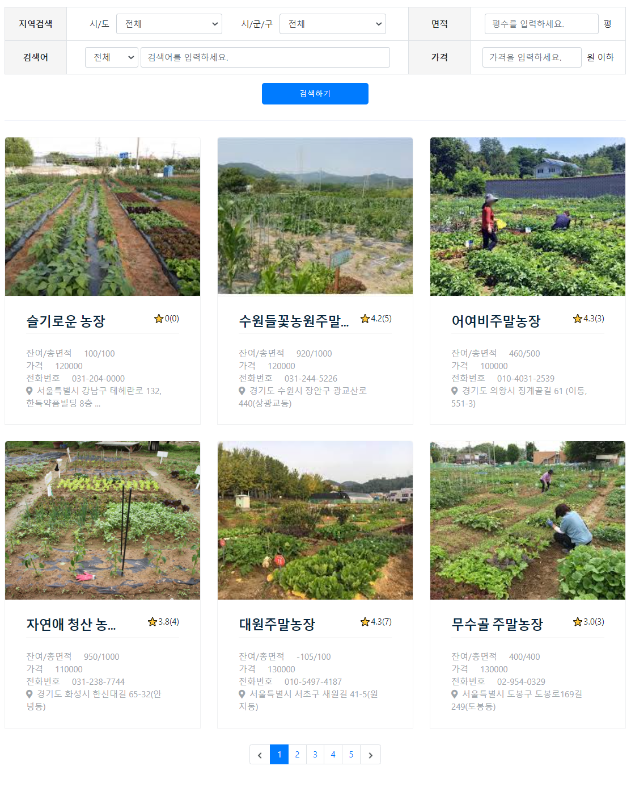

슬기로운 농촌생활

- 프로젝트 기간: 2021.07.13 ~ 2021.08.05 (1개월)
- 개발 인원: 5명
1. 주제 및 기획의도
- 주제: 농촌 활성화 웹 애플리케이션 개발
- 기획의도
- 농촌에 대한 다양한 정보를 공유하여 농촌경제를 활성화시킬 수 있다.
- 사용자가 원하는 지역의 농촌관련 프로그램을 검색하기 수월하다.
- 농촌관련 종사자가 프로그램을 운영하기에 용이하다.
2. 개발환경
- OS: Windows 10
- DB: Oracle 11g XE
- Tools: Eclipse, SQLdeveloper, eXERD
- 사용언어: JAVA(JDK 1.8), Oracle SQL, HTML5, CSS3, JavaScript, JSP/Servlet
- 사용기술: JDBC, DOM, JQuery
- Open API: JavaMail API, Kakao Maps API, KLID(한국지역정보개발원) 주소API,
SNS 공유 API, High Chart
3. 데이터 구조
4. 주요기능 및 담당업무
-
주말농장 CRUD
- 주말농장 등록, 검색, 수정, 삭제, 등록내역 보기
- 주말농장 신청/취소, 신청내역 보기
- 주말농장 신청현황, 신청 수락/거부
- 댓글 작성, 삭제


-
주소검색 & 주소기반 Map
- KLID 주소API를 활용한 주소 검색
- Kakao Maps API를 활용한 주소 기반 지도 출력
-
통계 차트
- High Chart를 활용한 관리자 페이지 통계 기능